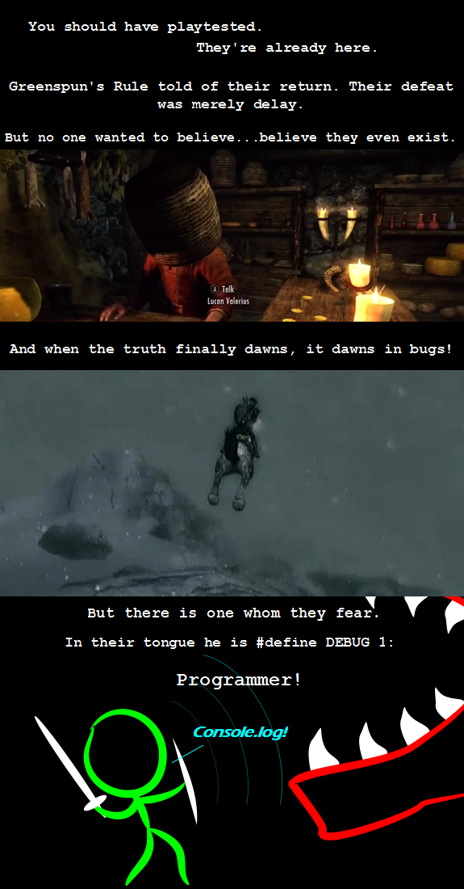

Comic JK 817
When I Feel Like It
⇤
<
?
>
⇥

⇤
<
?
>
⇥
Forum
.
RSS
.
Digg
.
Facebook
.
Reddit
.
Twitter
.
Stumbleupon
Seriously, what the hell is this shit? Enter your thoughts on number 817 here. Please, no spamming, trolling, or phreaking. Your mother finds and eats all bugs without the use of debug console printing. So, as he's now hooked up with Skyrim, no more daily updates for a while? Hello, I just found your comic from a friend posting a link on facebook. But I'm really high, and I don't understand it because I all but flunked Science and Math in HS. yours truly, an English major > Oh yeah? You and which army??? ;-) >Are you a non native speaker? Because normally we say "understand it", not "understand at it". >>Heh, I didn't notice that one. I'm going to have to use that sometime. >>> Here's a tip. Take more drugs. We all do it. >>>> Nah not all of us. Only the 75-90th percentile of cool people. Cool, I'll always think my Thu'ums are regexes from now on!! Its not a bug, if I put a basket on your head you wouldn't be able to see either! :) >I think the idea is more 'Bethesda put a basket over their head so they wouldn't see anything that would make them release after 11/11/11' >>Also it's in itself a bug in that if you were to put a basket/pot over the average Norseman's head, he'd take it off, throw it at you, pick up the nearest sharp object and remove your heart. Since Skyrim is the land of Nords (who are based heavily on Norse), a similar reaction should occur here. >>>That is an astute observation. This comic is awesome.